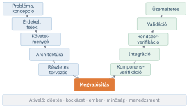
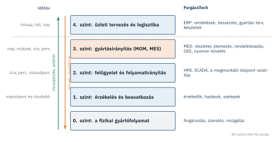
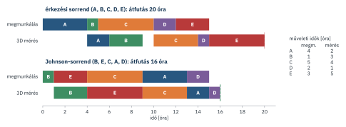
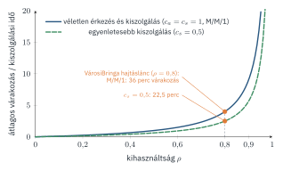

A fejezet feldolgozása után képes leszel:
- elhelyezni a gyártásirányítás feladatait a vállalat–irányítás integráció (ISA-95) szintjein;
- megfogalmazni egy ütemezési feladatot (feladatok, műveletek, erőforrások, korlátozások, célfüggvény), és Gantt-diagrammal ábrázolni;
- alkalmazni az SPT, az EDD és a Johnson-sorolást, és értelmezni, melyik célfüggvényre optimális;
- leírni egy diszkrét eseményű rendszert, és eldönteni, mikor kell szimulációval vizsgálni;
- a Kendall-jelöléssel osztályozni egy sorbanállási rendszert, kiszámítani az M/M/1 rendszer jellemzőit, és becsülni a változékonyság hatását;
- kiszámítani a készletforgást és a készlethatékonyságot, és ABC-elemzéssel differenciált készletgazdálkodást tervezni.
A 19. fejezet a folyamatot átlagokkal írta le: áram, kapacitás, kihasználtság. A 20. fejezet a lépések logikáját modellezte. Ez a fejezet három további kérdést vizsgál, amely a megvalósító folyamat tervezésében mindig felmerül:
- Ki, mikor, min dolgozzon? Ez az ütemezés kérdése.
- Mennyit kell várni? Ezt a sorbanállási modellek és a szimuláció válaszolják meg.
- Mennyi anyagot és félkész terméket tartsunk? Ez a készletgazdálkodás kérdése.
A három kérdést a Little-törvény köti össze (19. fejezet): a várakozó munka készlet, és a készlet átfutási idő. A fejezet Lakatos Béla egyetemi jegyzeteire (Lakatos, é. n.b, é. n.a) és a nemzetközi tankönyvekre épül (Pinedo 2022; Hopp és Spearman 2008; Silver, Pyke, és Thomas 2016).
21.1. A gyártásirányítás szintjei
Egy gyártó vállalat döntései különböző időtávokon születnek. Az IEC 62264 szabvány (az amerikai ISA-95 nemzetközi változata) a vállalatirányítási és a gyártásirányítási rendszerek integrációjához funkcionális hierarchiát határoz meg (21.1. ábra) (IEC 2013). A 4. szint az üzleti tervezés és a logisztika (jellemzően az ERP-rendszer), a 3. szint a gyártásirányítás (MOM, a gyakorlatban a MES): a részletes ütemezés, a gyártási rendelések kiadása, a teljesítmény követése. A 2. szint a felügyelet és a folyamatirányítás, az 1. szint az érzékelés és a beavatkozás, a 0. szint maga a fizikai folyamat. Az alsóbb szintek rövidebb időtávon döntenek: a 4. szint hónapokban és hetekben, a 3. szint napokban, műszakokban és órákban, az alsó szintek percekben és másodpercekben gondolkodnak.

Lakatos ugyanezt a hierarchiát a tervezés felől írja le: hosszabb időhorizonton a koordinációs szint aggregált tervet készít, rövid időhorizonton a lokális szint műveletterveket; a kettő együtt már a rendszertervezés és a rendszerirányítás kombinációja (Lakatos, é. n.a, 8.1. szakasz). A ForgácsTech problémája (4. fejezet) éppen a 3. szinten volt: az ERP ismerte a rendeléseket, a gépvezérlők a műveleteket, de a kettő között a heti papíralapú ütemterv egyhetes késleltetéssel zárta az irányítási kört. A MES ezt a rést tölti ki.
21.2. Ütemezés
Az ütemezési feladat elemei: a munkafeladatok (mit kell gyártani), a műveletek (milyen lépésekből áll), a műveleti egységek (milyen erőforrásokon) és a korlátozások. A műveletek és a műveleti egységek összerendelése az allokáció. A korlátozások lehetnek időbeliek (kezdési és befejezési idő, megszakíthatóság), kizárásiak (a feladatok osztoznak egy erőforráson) és sorrendiek (egy feladat olyan anyagot vagy információt igényel, amelyet egy másik állít elő) (Lakatos, é. n.b, 6.1. szakasz). Két feladatosztály különböztethető meg: az ütemezés az összerendelést és a sorrendet úgy határozza meg, hogy a korlátozások teljesüljenek, és a célfüggvény optimális legyen; a megvalósíthatósági vizsgálat adott összerendelésről azt dönti el, teljesíthetők-e a korlátozások (Lakatos, é. n.b, 6.1. szakasz).
Az ütemezési feladatokat a gépkörnyezet szerint osztályozzuk: egy gép, párhuzamos gépek, folyamatsor (flow shop: minden feladat ugyanabban a sorrendben halad át a gépeken) és műhelyrendszer (job shop: minden feladatnak saját útvonala van) (Pinedo 2022, 2. fejezet). A ForgácsTech egyedi rendelései műhelyrendszert alkotnak, a KoboCella-sor folyamatsor.
A munkafeladatok időjellemzői: a műveleti idő, a esedékesség (határidő), a átfutási idő (a feladat befejezéséig eltelt idő), az pontatlanság (lehet negatív), a késedelem (Lakatos, é. n.b, 6.3. szakasz). A leggyakoribb célfüggvények az átlagos átfutási idő, a legnagyobb késedelem, a késő feladatok száma, a teljes átfutás (az utolsó feladat befejezése) és az átállási veszteség. Az ütemtervet a Gantt-diagram ábrázolja: minden sor egy erőforrás, minden téglalap egy művelet, amelynek hossza a műveleti idő. A diagram több mint száz éve a termelésirányítás alapeszköze (Wilson 2003).
Egy gépen a legegyszerűbb ütemezési szabályok a sorolási elvek (Lakatos, é. n.b, 6.3. szakasz):
- FCFS (first come, first served): érkezési sorrend;
- SPT (shortest processing time): a legrövidebb műveleti idő először; egy gépen ez minimalizálja az átlagos átfutási időt, az átlagos várakozási időt és az átlagos pontatlanságot;
- EDD (earliest due date): a legkorábbi határidő először; egy gépen ez minimalizálja a legnagyobb késedelmet;
- CR (critical ratio): a határidőig hátralévő idő és a műveleti idő hányadosa szerint, dinamikus helyzetekre.
A megmunkáló központra reggel hat rendelés vár (21.1. táblázat). Érkezési sorrendben négy rendelés késik, a legnagyobb késedelem 12 óra. SPT-sorolással az átlagos átfutási idő 16,8 óráról 13,0 órára csökken, és csak egy rendelés késik 2 órát. EDD-sorolással egyetlen rendelés sem késik, az átlagos átfutás 13,5 óra. A MES ütemezője ezért a határidő-tartást elsődleges célnak tekintve EDD-vel indul, és az egyforma határidejű rendeléseket SPT szerint rendezi.
| Rendelés | R1 | R2 | R3 | R4 | R5 | R6 |
|---|---|---|---|---|---|---|
| műveleti idő [óra] | 6 | 2 | 8 | 3 | 5 | 4 |
| határidő [óra múlva] | 20 | 6 | 30 | 10 | 12 | 24 |
| Sorolás | Sorrend | Átlagos átfutás [óra] | Késő rendelések | Legnagyobb késedelem [óra] |
|---|---|---|---|---|
| FCFS | R1, R2, R3, R4, R5, R6 | 16,8 | 4 | 12 |
| SPT | R2, R4, R6, R5, R1, R3 | 13,0 | 1 | 2 |
| EDD | R2, R4, R5, R1, R6, R3 | 13,5 | 0 | 0 |
Két gépből álló folyamatsorban, ahol minden feladat előbb az első, majd a második gépen halad át, a teljes átfutást Johnson eljárása minimalizálja (Johnson 1954): keresd meg a legkisebb műveleti időt a még nem sorolt feladatok között; ha ez az első gépen van, a feladat a sorrend elejére kerül, ha a másodikon, a végére; ismételd a maradék feladatokra (Lakatos, é. n.b, 6.3. szakasz). Három vagy több gépre és műhelyrendszerre a feladat általában NP-nehéz, ezért heurisztikákat, egészértékű programozást vagy kényszerprogramozást használnak (Pinedo 2022).
Öt rendelés előbb a megmunkáló központon, majd a 3D mérőgépen halad át (21.2. ábra). Érkezési sorrendben a teljes átfutás 20 óra, mert a mérőgép az elején és a C rendelés előtt is áll. A Johnson-sorrend (B, E, C, A, D) a legrövidebb első gépi idejű B rendeléssel indít, hogy a mérőgép hamar munkát kapjon, és a legrövidebb második gépi idejű D rendeléssel zár. A teljes átfutás 16 óra; ez egyben az alsó korlát is (az első gép 15 órája plusz a legrövidebb mérés), tehát az ütemezés optimális.

21.3. Diszkrét eseményű rendszerek és szimuláció
A szakaszos gyártórendszerek, a műhelyek és a szolgáltatások diszkrét eseményű rendszerek: véges idő alatt véges számú esemény történik, és a rendszer állapota csak ezekben az időpontokban változik (Lakatos, é. n.a, 8.1. szakasz). Az esemény lehet egy munkafeladat beérkezése, egy művelet kezdete vagy vége, egy gép meghibásodása. Az állapot lehet diszkrét (hány feladat vár a gép előtt) vagy folytonos (folyadékszint egy tartályban). A rendszer leírásának elemei az állapot, a rendszeridő és az eseménylista (Lakatos, é. n.b, 8.1. szakasz).
A diszkrét eseményű szimuláció ezt a leírást hajtja végre: a szimulációs óra mindig a következő esemény időpontjára ugrik, végrehajtja az esemény hatását az állapotra, és az újonnan keletkező eseményeket felveszi az eseménylistára (Law 2015). A véletlen érkezési és műveleti időket valószínűségi eloszlásokból sorsolja, ezért egy futás egyetlen lehetséges lefolyás: a következtetéshez több független futás és konfidenciaintervallum kell (Law 2015). A szimuláció akkor szükséges, ha a rendszer túl összetett az analitikus modellekhez: több erőforráson osztozó termékek, meghibásodások, átállások, prioritások, munkaidő-beosztás. A szimulációs modell érvényességét a valós rendszerrel kell igazolni (3. fejezet).
21.4. Sorbanállás
Ha a munkafeladatok véletlenszerűen érkeznek, és a kiszolgálásuk ideje is ingadozik, akkor átlagosan elegendő kapacitás mellett is sorok alakulnak ki. A sorbanállási rendszer elemei az ügyfélpopuláció, az érkezési folyamat, a kiszolgáló egységek száma és kiszolgálási ideje, a rendszer kapacitása és a sor viselkedése (Lakatos, é. n.b, 8.3. szakasz). Kendall jelölése a rendszert az érkezési folyamat / kiszolgálási idő eloszlása / kiszolgálók száma hármassal írja le (Kendall 1953): M a Markov-tulajdonságú (Poisson-érkezés, exponenciális kiszolgálási idő), D a determinisztikus, G az általános eloszlás. Az M/M/1 rendszerben egy kiszolgáló dolgozik, az érkezési intenzitás , a kiszolgálási intenzitás , a kihasználtság . A stacionárius állapot jellemzői:
ahol a rendszerben, a sorban lévő feladatok várható száma, a rendszerben, a sorban töltött idő várható értéke. A jellemzőket a Little-törvény köti össze: , (Lakatos, é. n.b, 8.3. szakasz; Little 1961).
Az M/M/1 modell a véletlen érkezést és a nagyon ingadozó kiszolgálást feltételezi. Általános eloszlásokra Kingman közelítése ad becslést a sorban töltött időre egy kiszolgáló esetén, nagy kihasználtságnál (Kingman 1961). Hopp és Spearman ezt a változékonyság (V), a kihasználtság (U) és az idő (T) szorzataként fogalmazza meg (Hopp és Spearman 2008, 8. fejezet):
ahol és az érkezések közötti idő és a kiszolgálási idő relatív szórása, az átlagos kiszolgálási idő. Exponenciális eloszlásoknál () a közelítés az M/M/1 pontos képletét adja vissza. A képlet két tanulsága a rendszertervezés alapszabálya: a várakozás a kihasználtság közelében korlátlanul nő, és a változékonyság csökkentése ugyanúgy rövidíti a várakozást, mint a kapacitás bővítése (21.3. ábra).
A javítóműhely szűk keresztmetszete a hajtáslánc-javítás (19. fejezet): óránként átlagosan kerékpár érkezik, a szerelő óránként kerékpárt javít, a kihasználtság . Ha az érkezések véletlenszerűek és a javítási idők exponenciálisak, egy kerékpár átlagosan órát, azaz 36 percet vár, a rendszerben átlagosan kerékpár van. A javítási időket méréssel ellenőrizve kiderült, hogy relatív szórásuk csak 0,5, mert a szerelő szabványos munkautasítás szerint dolgozik. Kingman közelítésével a várakozás perc. A nyári csúcsban, a feladatok átcsoportosítása után a mosás kihasználtsága 0,86 lesz; itt a várakozás már a kiszolgálási idő hatszorosa is lehet, ezért a csapat a csúcsidőszakra időpontfoglalást vezetett be, amely az érkezések változékonyságát is csökkenti.

Több párhuzamos kiszolgálóra (M/M/c) az Erlang-féle képletek adnak pontos eredményt; ezeket és az időbeli változásokat a Gyakorlati útmutató sorbanállási eszközlapja és notebookja számítja ki.
21.5. Készlet és készlethatékonyság
A készlet a termelési rendszer puffere: alapanyag, alkatrész, műveletközi félkész termék és végtermék formájában. Lakatos a készletezés motivációi között a gazdaságosságot, a bizonytalanságok csökkentését, a szállítási és logisztikai okokat, a termelés simítását és az irányítási költségek csökkentését sorolja fel; a készletezési rendszert az igény jellege, a szállítási idő, a készletellenőrzés periódusa és a készlet értékének változása jellemzi (Lakatos, é. n.b, 10.1. szakasz). A készlet azonban pénzt köt le, helyet foglal, avul, és a Little-törvény szerint meghosszabbítja az átfutást.
A készlet nagyságát a forgalomhoz viszonyítjuk:
ahol a forgalmat és a készletet azonos értékalapon (például bekerülési áron) kell mérni (Silver, Pyke, és Thomas 2016). A készlethatékonyság az átlagos készlet és a forgalom hányadosa: azt mutatja, mekkora készlet kell ezer forint forgalomhoz. A készlet napokban kifejezve a Little-törvény alkalmazása: az átlagos idő, amelyet egy anyagegység a raktárban tölt.
A készletgazdálkodás erőforrásait a tételek fontossága szerint érdemes elosztani. Az ABC-elemzés a tételeket éves felhasználási értékük szerint csökkenő sorrendbe rendezi, és három csoportra osztja: a kevés, de nagy értékű A tételekre, a közepes B és a sok, kis értékű C tételekre (Silver, Pyke, és Thomas 2016). A csoporthatárok vállalatonként változnak; a könyv példái a tételek 20–40–40%-os megosztásával dolgoznak. A csoportokhoz eltérő szabályozás tartozik: az A tételeknél pontos nyilvántartás, gyakori felülvizsgálat és előrejelzés, a C tételeknél egyszerű nyilvántartás, nagyobb rendelési tételek és biztonsági készlet.
A ForgácsTech éves anyag- és szerszámfelhasználása 185 millió forint, az átlagos készlet értéke 31 millió forint. A fordulatszám 6, a készlet 230 munkanappal számolva 38 munkanapnyi felhasználásnak felel meg. A 20 leggyakrabban használt tétel ABC-elemzése szerint a tételek 20%-a (három rúdanyag és a keményfém marószár) adja a felhasználási érték 70%-át, a következő 40% 27%-át, az utolsó 40% csupán 3%-át. A csapat az A tételeknél heti készletfelülvizsgálatot és a rendelésekhez kötött anyaglefoglalást vezetett be a MES-ben; ez szüntette meg az anyagra várást a jövőbeli értékáramban (19. fejezet). A C tételeknél negyedéves keretrendelésre tértek át, ami csökkentette a beszerzés adminisztrációját.
A rendelési tételnagyság klasszikus modellje, a gazdaságos rendelési tételnagyság (EOQ), a rendelési (átállási) költség és a készlettartási költség egyensúlyát keresi: , ahol az éves igény, a rendelésenkénti fix költség, az egységnyi éves készlettartási költség (Silver, Pyke, és Thomas 2016). A képlet szerint a fix költség csökkentése kisebb optimális tételnagyságot ad: ugyanez a gondolat áll a SMED mögött (19. fejezet). A rövidebb átállás kisebb sorozatot, kisebb készletet és rövidebb átfutást tesz lehetővé.
Az ütemezési feladatok nagy része kombinatorikus optimalizálási feladat, amelyet célalgoritmusok (heurisztikák, egészértékű és kényszerprogramozás) oldanak meg (Pinedo 2022). A nagy nyelvi modellek itt elsősorban a feladat megfogalmazásában segíthetnek: a szöveges igényekből (határidők, prioritások, kizárások) korlátozásokat és célfüggvényt írnak, vagy elmagyarázzák egy ütemterv döntéseit. Az ütemtervet azonban ellenőrizhető algoritmusnak kell előállítania, és a korlátozások teljesülését automatikusan ellenőrizni kell.
Gyakori hiba, hogy a kapacitást az átlagos igényre méretezik, és 95–100%-os kihasználtsággal terveznek. A sorbanállási modellek szerint ilyenkor a várakozás a kiszolgálási idő sokszorosa, és a legkisebb zavar is hosszú sorokat okoz. A szűk keresztmetszeteken tartalékkapacitást kell tervezni, vagy csökkenteni kell az érkezések és a kiszolgálás változékonyságát (időpontfoglalás, szabványos munka, kisebb sorozatok).
- Az IEC 62264 (ISA-95) a vállalati (4.) és a gyártásirányítási (3.) szint integrációját írja le; a MES a 3. szinten végzi a részletes ütemezést és a teljesítménykövetést.
- Az ütemezési feladat elemei a munkafeladatok, a műveletek, az erőforrások, a korlátozások és a célfüggvény; az ütemtervet Gantt-diagram ábrázolja.
- Egy gépen az SPT az átlagos átfutást, az EDD a legnagyobb késedelmet minimalizálja; két gépes folyamatsorban a Johnson-eljárás a teljes átfutást.
- A diszkrét eseményű rendszer állapota csak eseményekkor változik; a szimuláció a következő esemény időpontjára léptet, és több futásból von le következtetést.
- Az M/M/1 rendszer várakozása ; Kingman közelítése szerint a várakozás a változékonyság, a kihasználtság és a kiszolgálási idő szorzata.
- A készletforgás és a készletnapok a Little-törvény alkalmazásai; az ABC-elemzés a készletgazdálkodás figyelmét a nagy értékű tételekre irányítja.
- Melyik ISA-95 szinthez tartozik a heti termelési terv, a műszakon belüli rendeléssorrend és egy hajtás fordulatszám-szabályozása?
- Négy feladat műveleti ideje 5, 2, 7 és 3 óra, határidejük 9, 4, 20 és 6 óra. Sorold SPT és EDD szerint, és számítsd ki az átlagos átfutást és a legnagyobb késedelmet!
- Négy feladat ideje az első és a második gépen: A (3, 6), B (5, 2), C (1, 2), D (6, 6). Add meg a Johnson-sorrendet és a teljes átfutást!
- Miért kell több független szimulációs futás egy sztochasztikus rendszer vizsgálatához?
- Egy kiszolgálóhoz óránként 8 ügyfél érkezik, a kiszolgálás átlagosan 6 perc. Mennyi a kihasználtság, és M/M/1 feltevéssel mennyi a sorban töltött idő és a rendszerben lévő ügyfelek száma?
- Az előző rendszerben a kiszolgálás relatív szórása 0,3-ra csökken. Mennyi a sorban töltött idő Kingman közelítésével?
- Egy cég éves anyagfelhasználása 120 millió forint, átlagos készlete 20 millió forint. Mennyi a fordulatszám és a készlet napokban (365 nappal)?
- Miért nem elég az ABC-elemzés önmagában a készletszabályozás megtervezéséhez?
Megoldás
- A heti terv a 4. szint (üzleti tervezés), a műszakon belüli sorrend a 3. szint (gyártásirányítás), a fordulatszám-szabályozás a 2. és az 1. szint.
- SPT: 2, 3, 5, 7 (a második, a negyedik, az első, a harmadik feladat); befejezések 2, 5, 10, 17, átlagos átfutás 8,5 óra; késedelmek: 0, 0, 1 (az első feladat 10 > 9), 0, legnagyobb 1 óra. EDD: határidő szerint 4, 6, 9, 20 (második, negyedik, első, harmadik): ugyanez a sorrend, átlagos átfutás 8,5 óra, legnagyobb késedelem 1 óra.
- A legkisebb idő C első gépen (1) → elejére; aztán B második gépen (2) → végére; aztán A első gépen (3) → C után; végül D. Sorrend: C, A, D, B. Első gép: C 0–1, A 1–4, D 4–10, B 10–15; második gép: C 1–3, A 4–10, D 10–16, B 16–18. Teljes átfutás 18 óra.
- Mert egy futás a véletlen sorsolások egyetlen lehetséges kimenete; a teljesítményjellemzők becsléséhez és a bizonytalanság számszerűsítéséhez (konfidenciaintervallum) több független futás eredményének eloszlása kell.
- /óra, ; óra = 24 perc; ügyfél.
- perc.
- Fordulatszám , készlet napokban nap.
- Mert csak a felhasználási értéket nézi; az igény változékonyságát, a beszerzési időt, a tétel kritikusságát (például egy olcsó, de pótolhatatlan alkatrész) és az avulást nem. Ezért gyakran kiegészítik az igény változékonysága szerinti (XYZ) vagy kritikussági besorolással.
Saját fejlesztési feladatodhoz, ha a megvalósító folyamatban releváns:
- helyezd el a rendszer irányítási funkcióit az ISA-95 szintjein, és jelöld, melyik szinten milyen időtávú döntés születik;
- készíts Gantt-diagramot egy jellemző napra vagy műszakra, és vesd össze legalább két sorolási elvet;
- a szűk keresztmetszetnél becsüld meg a várakozást sorbanállási modellel, és vizsgáld meg a kihasználtság és a változékonyság hatását;
- ha a folyamatban készlet van, számítsd ki a fordulatszámot, és készíts ABC-elemzést;
- használd a Gyakorlati útmutató Gantt-, ABC- és sorbanállási eszközlapját.
- Lakatos (é. n.b), 6., 8. és 10. fejezet, valamint Lakatos (é. n.a), 8. fejezet: a gyártásütemezés, a diszkrét eseményű rendszerek, a sorbanállás és a készletezés magyar nyelvű alapjai.
- Pinedo (2022): az ütemezéselmélet és -algoritmusok alapvető tankönyve.
- Hopp és Spearman (2008): a változékonyság, a kihasználtság és a várakozás kapcsolata a gyártórendszerekben.
- Law (2015): a diszkrét eseményű szimuláció módszertana.
- Silver, Pyke, és Thomas (2016): a készletgazdálkodás és a termeléstervezés tankönyve.
- IEC (2013): a vállalat–irányítás integráció szabványa.